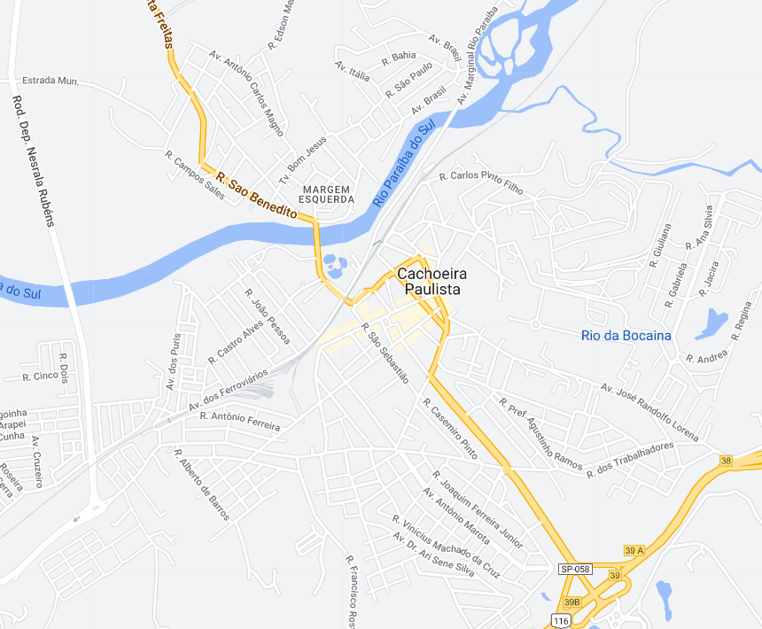

Cachoeira Paulista - Geodex

Município de Cachoeira Paulista
-
Populacão: 38.827 pessoas
-
Área: 287,990km²
-
Fundação: 9 de Março de 1880
-
Distância da Capital: 203km
Cachoeira Paulista é uma cidade localizada no Vale do Paraíba, fundada em 1880. Sua história está relacionada à ocupação das terras pelos bandeirantes, à passagem das tropas no período colonial e à influência da cultura cafeeira. A cidade se desenvolveu com a construção da Estrada de Ferro Dom Pedro II e, posteriormente, com a expansão industrial. Atualmente, Cachoeira Paulista é conhecida por abrigar o Santuário Nacional de Nossa Senhora Aparecida e por sediar eventos religiosos de grande porte, como a Romaria do Terço dos Homens.